Run the business behind the edit.
Every production, booking, note and dollar, held together on your iPhone and iPad. Built for the work around the cut, and kept in your own iCloud, not ours.
iPhone & iPad · iOS 26.2 or later · 7-day free trial
- iPhone & iPad
- Works offline
- Australian financial year
- No account
- No analytics
- Syncs with your own iCloud
Every job you have, on one timeline.
Each production gets its own colour, and that colour follows it everywhere. Three views of the same calendar show what's on, what's next, and when you're free again.
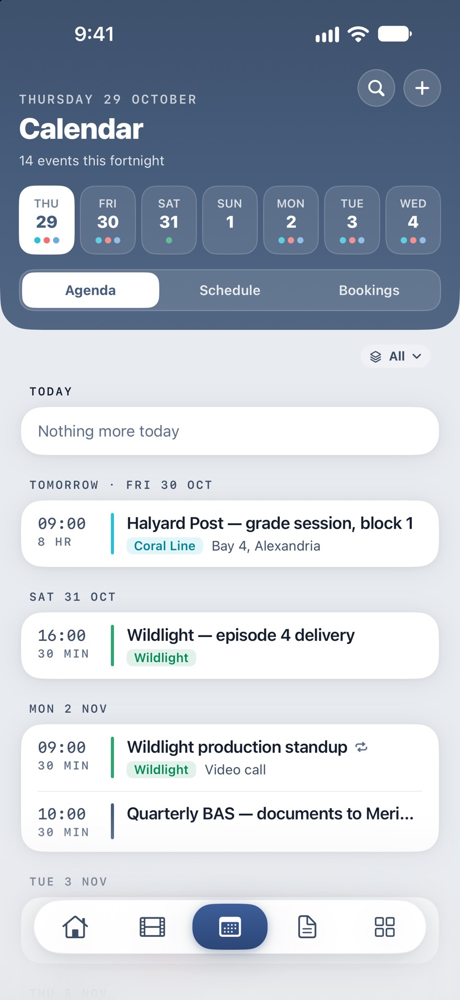
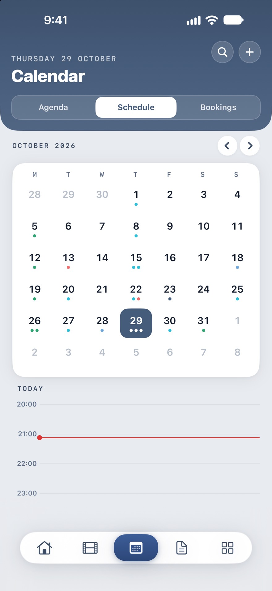
Set the rate once. Watch it earn.
Dates, rate and work days go in when the job is booked. From then on EditDeck keeps the contract clock, gross, net and tax to the day, and how much of the job is left.
- Day, week or hourly rates, with super on top or included, and holiday pay.
- Shutdowns respected: the earned figure goes flat over a Christmas break instead of overstating the year.
- Everything linked: the client, the crew, its events, notes, files, expenses and trips.
- Running, booked and past in one list, past jobs grouped by financial year.
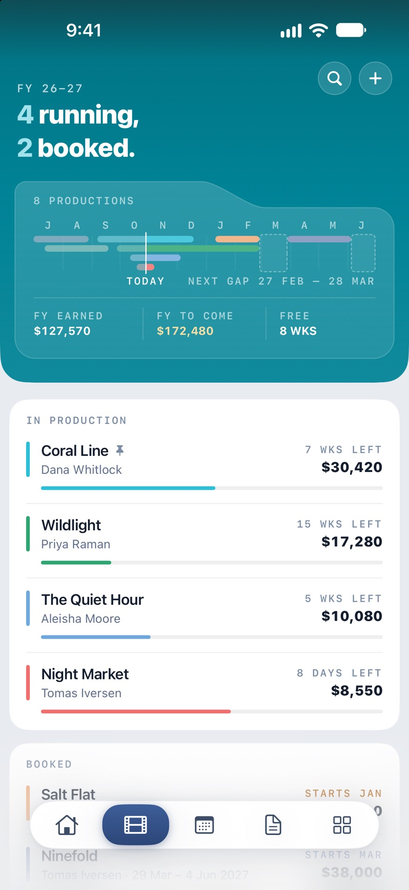
Everything a cut throws off, filed against the job.
Notes from the review, the recording of it, the grade references, the marker list, the call sheet and the music you cleared. Each one knows which production it belongs to.
Change lists with timecodes.
Write it up in the review, tick it off in the edit. Timecodes stand out on their own, and a note can hold checklists, tables, photos, scans and recordings.
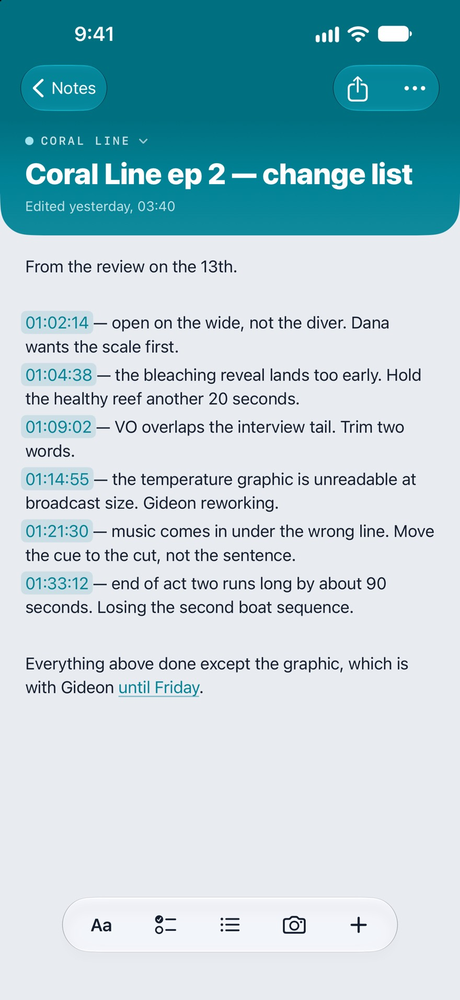
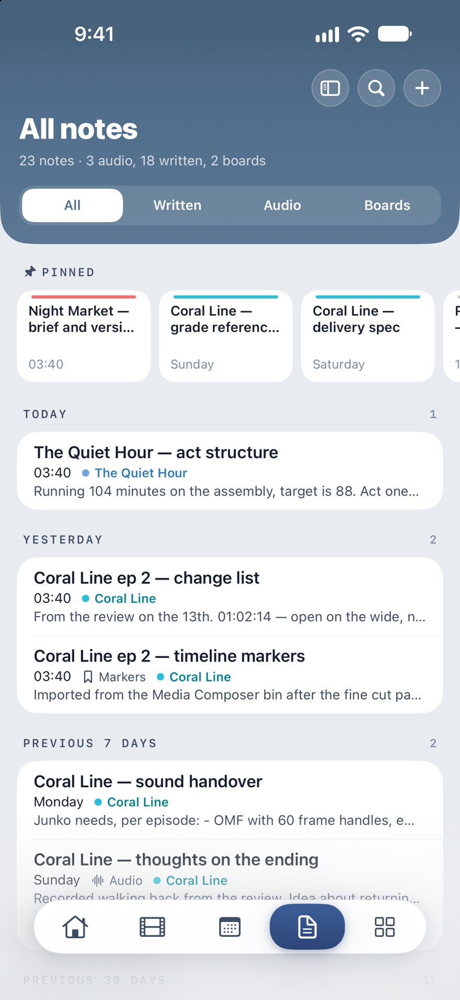
Record the review. Read it back.
Drop marks while you talk, then tap one to play from that moment. The transcript is written on your device, so the recording never leaves it to be transcribed.
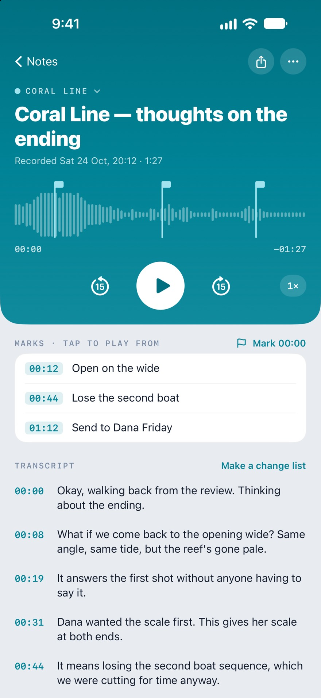
References for the grade.
Stills, colour palettes and mood tags for a look, captioned and on one page. Share it with the colourist as a PDF.
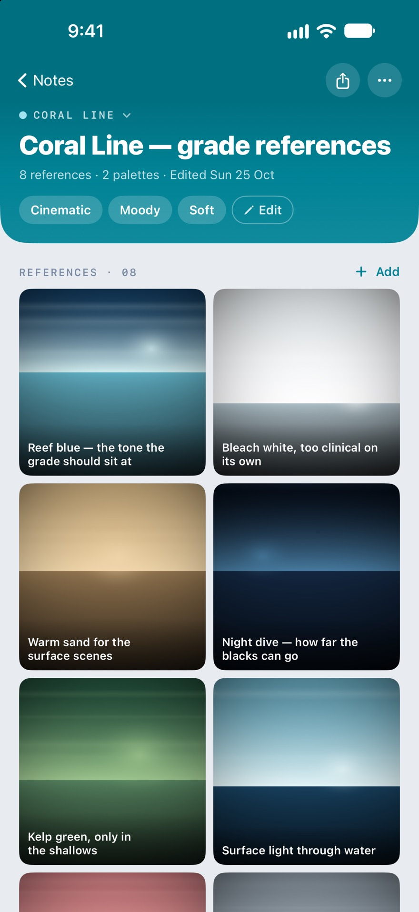
Your marker list, off the workstation.
Import a marker list from Media Composer and work the notes anywhere. Flag, recolour, tick off what's done, then export the list back into the bin.
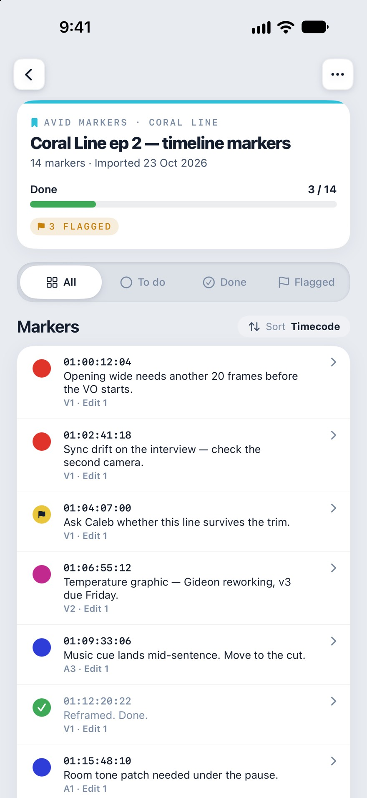
The paperwork, by production.
Every production gets its own folders. Scan a call sheet or a contract with the camera, add photos and PDFs, and find them again under the job that produced them.
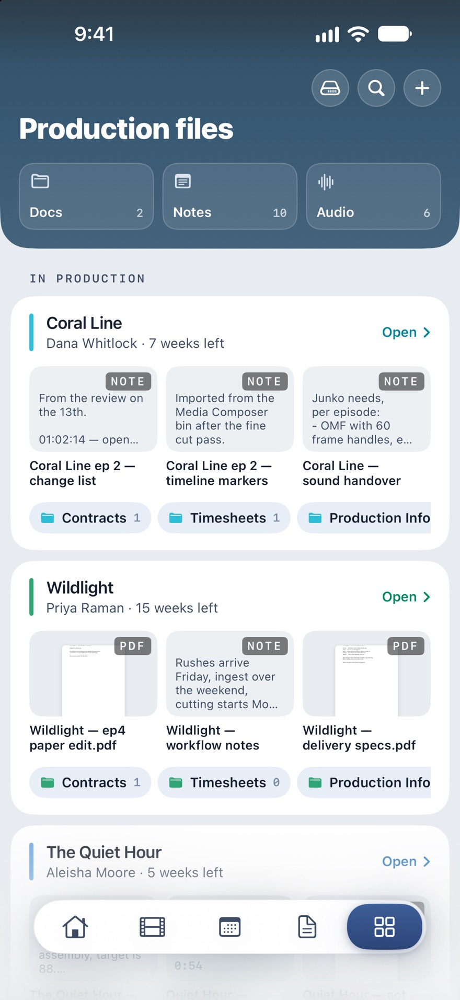
Every track, ready for the cue sheet.
Songs, production-library tracks and sound effects, each logged against the productions that used it, so licences and cue sheets aren't a hunt at the end.
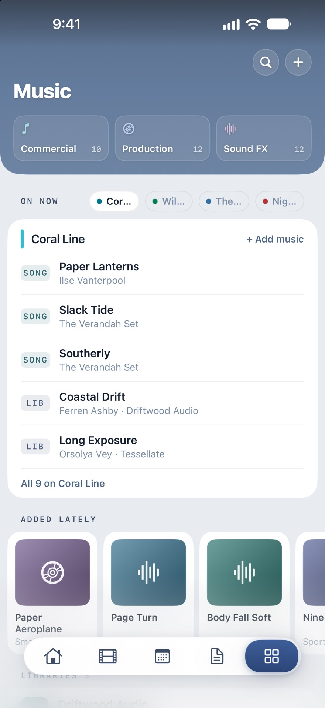
Clients and crew, linked to the work.
Each person shows the productions you did together, with notes and links alongside. Import from your iPhone's contacts, and keep client portals, stock sites and delivery specs a tap away.
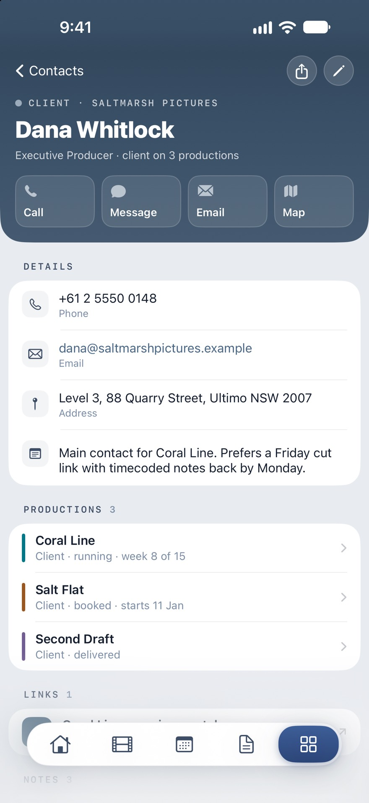
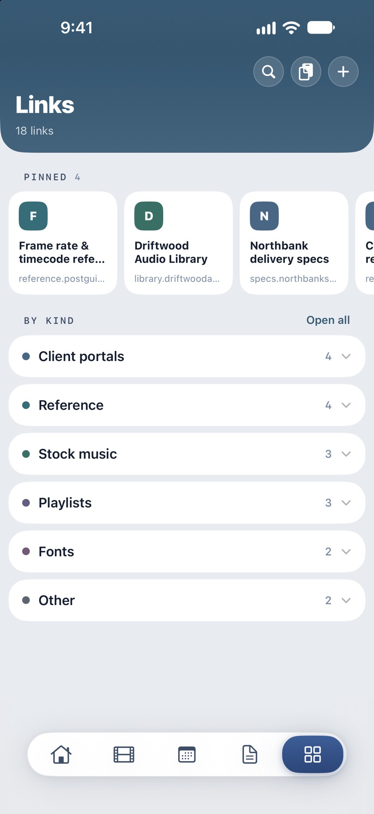
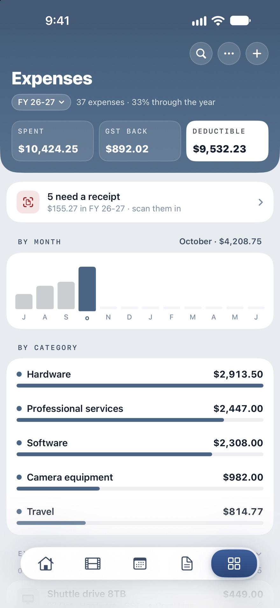
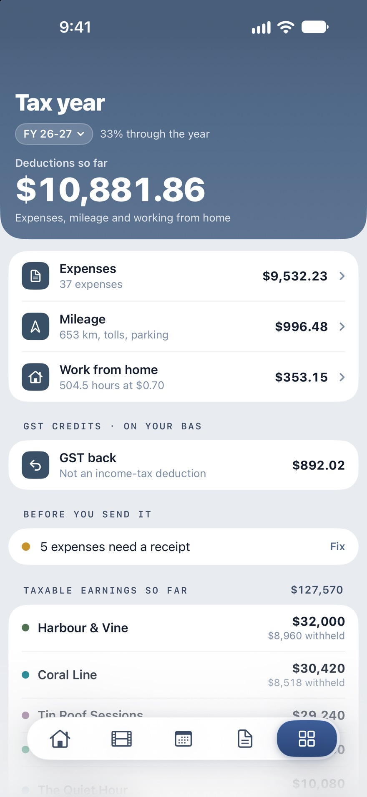
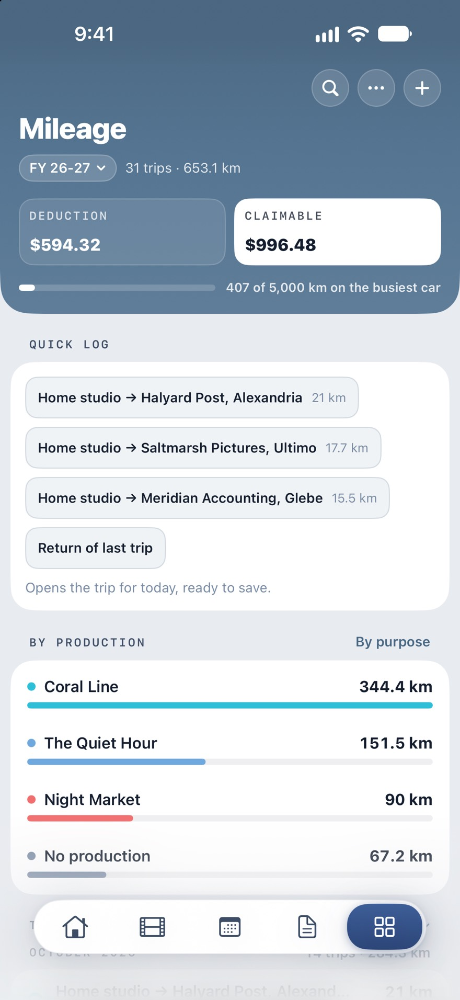
Built for the Australian year.
July to June, GST, super and the ATO's own rates. Added up as you go, not pieced together in a panic.
Wherever you are working.
Made for iPad too
A production, a note or a person opens beside its list, and the Dashboard and Agenda spread out into columns. Keyboard shortcuts included.
Widgets
The job you're on and what's next, on your Home Screen and Lock Screen. A recording or an event in progress shows as a Live Activity.
Reminders that know the job
A morning summary, event reminders, and a heads-up before a production starts or wraps. Quiet hours keep the night quiet.
Search everything
Productions, notes and their transcripts, files, contacts, links, expenses and events, from one search.
Backups you hold
Export everything to one .editdeck file whenever you like. With iCloud Drive on, a weekly backup is kept there for you too.
Light or dark
Follow the system or pick one. Either way, production colours stay exactly as you chose them.
Your work stays yours.
There is no EditDeck account and no EditDeck server. Your library lives on your device and syncs through your own private iCloud, under your Apple Account, and nowhere else.
Read the privacy policyNo account to makeOpen the app and start. Nothing to sign up for, nothing to log in to.
No analytics, no ads, no trackingNo analytics, advertising or tracking code in the app. Nothing about how you use it is collected.
Your own iCloudSync runs through Apple's private CloudKit database in your account. Without iCloud, EditDeck works entirely on the device.
Transcripts and receipts read on the deviceSpeech and text recognition run on your iPhone or iPad. Your audio and receipts aren't sent anywhere to be read.
Try it free for a week.
EditDeck is one subscription, monthly or yearly, with everything included on iPhone and iPad. The first seven days are free. Prices are shown in your own currency on the App Store.
- Everything, on both devices. One subscription covers your iPhone and iPad through iCloud.
- Cancel any time in Settings, under your Apple Account's Subscriptions.
- Your data stays yours. If you stop subscribing you can still back it all up to a file.
- Restore or redeem from the subscription screen: restore a purchase on a new device, or use an offer code.
Good to know.
Does it work offline?
Yes. Everything lives on your device, so the whole app works without a connection. iCloud sync catches up when you're back online.
I'm not in Australia. Is it still for me?
The schedule, productions, notes, recordings, files, music and contacts work anywhere. The tax side (the July to June year, GST, super and the ATO's rates) is built around Australian rules, so those totals won't match another country's.
How does it sync between my iPhone and iPad?
Through iCloud, under your own Apple Account. Sign in to the same account on both and your library follows. There's no EditDeck server in between.
What happens to my data if I stop subscribing?
It stays on your device and in your iCloud. From the subscription screen you can still back everything up to an .editdeck file, and it's all there again if you come back.
Does it connect to Avid Media Composer?
Through files. Export a marker list from Media Composer, open it in EditDeck, work through it anywhere, then export the list back to bring it into the bin.
Where do I get help?
On the support page, or email madebymikesupport@icloud.com. Every message reaches the person who makes the app.
Bring order to the freelance grind.
The jobs, the money and the schedule, in your pocket and on your desk.